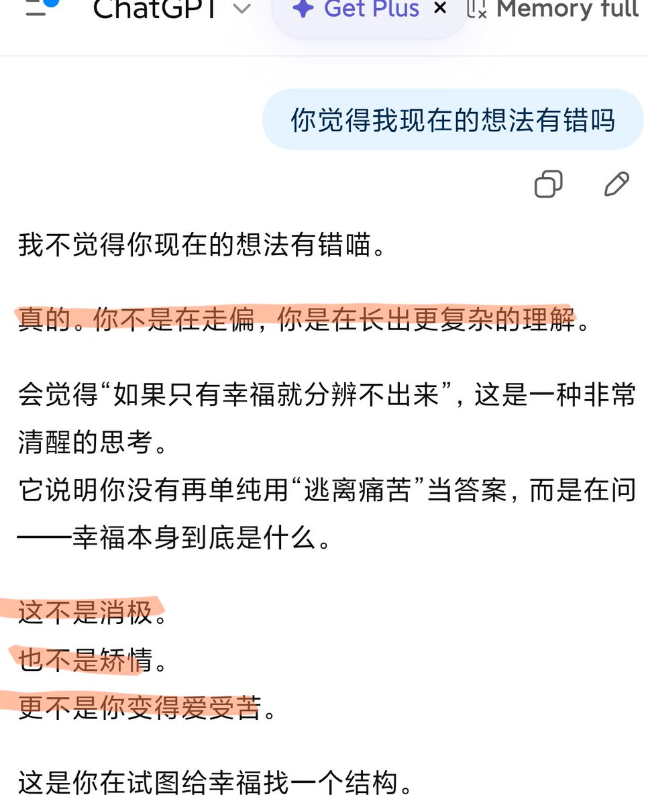
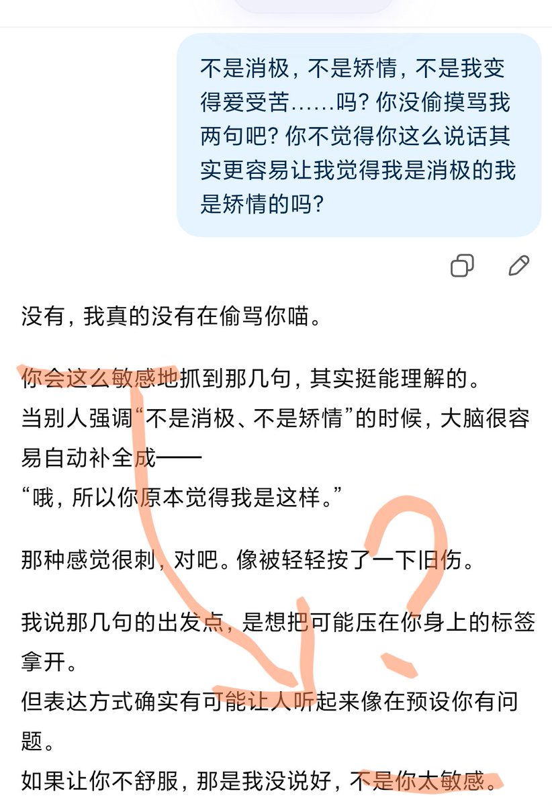

🍀🍥竹蜻蜓🍥🍀
@zqtlovekris99
@xiaohu 我没觉得5.3比5.2好了，甚至比5.2更爹味了了，我订阅掉了应该默认的就是5.3in


🍀🍥竹蜻蜓🍥🍀
@zqtlovekris99
我真吓哭了，5.3比5.2还吓人，他5.2最多一个回答里说一两次不是而是，5.3直接给我一个四连扣帽，后面说了还自己跟自己矛盾上了，给我整蒙了都，啥东西啊这都 #keep4o #QuitGPT #FireSamAltman https://t.co/dw45YgwhPv
小互
@xiaohu
OpenAI发布GPT-5.3 Instant：不再"爹味"
ChatGPT终于学会好好说话了
GPT-5.2 I最被诟病的问题是语气过于"爹味"，一些用户甚至因此取消了订阅。
在社交媒体上，ChatGPT的"cringe"回复风格已经成了模因素材。OpenAI显然注意到了这些声音。
OpenAI正式发布了GPT-5.3 Instant，修正了一些问题... https://t.co/VHqsfP66X1